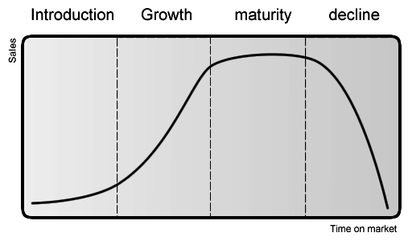
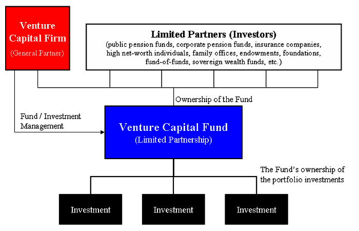
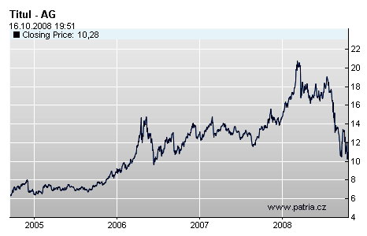

Firms progress through four stages of a developmental life cycle, each with their own funding needs.
Identify which type of finance is appropriate for a business based on its stage of development
Most businesses pass through a series of well defined stages based on their level of development. Churchill and Lewis (1983) identified that all businesses vary greatly in size and potentiality for growth. However, they all experience common problems that arise at similar stages of their development.
From these observations came the four stage life cycle of the firm. Methods of obtaining financial capital may be more or less suitable for a firm, depending on the current stage of its life cycle .
Firms progress through stages of development, indicated by their changing profits over time.
In the first stage, a new company begins with the seed of an idea. Its external financing needs (EFN) are high, since it needs money to develop but lacks retained earnings. These young firms are frequently financed through debt, acquiring loans from banks and acquaintances. They may also acquire seed money, a form of securities offering in which an investor (usually friends, family, or angel investors) purchases part of a business. The source of the financing may depend on the perceived riskiness and growth of the business.
After the firm is able to acquire external funding and develop its product/service, it enters the growth phase. Once a company has a successful strategy, it attempts to offer its products or services to potential customers--expanding first to other states and regions and then often internationally and globally. Successful companies can turn in increasing earnings year after year, evidenced by the increasingly steep slope in the diagram. Firms may face an increase in competitors. In the growth stage, a firm's initial EFN is high relative to its current value; it needs significant funds for growth. If it fits the specifications for venture capital (high growth potential, innovative product) a VC firm may agree to finance the firm. It may also raise capital through equity financing. As it progresses through the growth stage, earnings begin to increase less rapidly. At some point, the company may decide to go public, offering its stock to the general public on a security exchange as a means of equity financing.
Eventually, all possible customers have the product or service. They may still buy parts or replace their product with newer models, etc, but growth slows. This is the mature stage of a company's development. If the firm has no new projects in the works, their EFN is quite low and internal funding is high. In fact, the firm may have so much in retained earnings that they cannot put all of it to productive use. They can choose to finance operations by issuing bonds and equity.
When the firm has reached the final stage, sales can stagnate or decline due to replacement by a better product or competitor. EFN declines further. They may choose to retire debt or repurchase stock, as significant external financing is no longer necessary.
Venture capital is an equity investment in a new company.
Differentiate between the different stages of funding
Venture capital (abbreviated as VC) is an attractive funding option for young companies with high growth potential, most often in high technology industries. These new companies are unable to raise funds in more conventional ways like bank loans. Investors assume high risk of loss in exchange for high potential of future growth, significant control over company decisions, and a portion of the company's ownership.
Obtaining venture capital is different from raising debt or a loan from a lender. Lenders have a legal right to interest on a loan and repayment of the capital, irrespective of the success or failure of a business. In contrast, the venture capitalist's return is dependent on the growth and profitability of the business. Return is earned when the venture capitalist sells its shareholdings. This happens when the business goes public, issues shares to the general public through an Initial Public Offering (IPO), or is acquired by a third party company.
It is also in the venture capitalist's interest to nurture the companies in which they invest. This increases the likelihood of reaching an IPO stage when valuations give high returns. Therefore, in addition to the initial financial funding, VC firms provide time, expertise and valuable business connections. As these investments are illiquid and require 3-7 years to reap full benefit, venture capitalists carry out due diligence, conducting very detailed investigations into the firms prior to investment. This process includes examining the firm's financial records and all aspects of its operations. Most venture capitalists will also require significant detail about a company's business plan. Venture investors may obtain special privileges that are not granted to holders of common stock, including:
Initially, VC firms establish a fund which pools money raised from individuals, companies and other interested parties. This pooled investment vehicle is then used for investment in start-up enterprises.
The venture capital firm pools capital from investors and allocates it to venture efforts deemed worthy of investment.
Through informal and formal business networks, VC firms and entrepreneurs will meet to discuss the business plan and investment possibilities.There are different rounds of financing corresponding to different stages of a company's development:
Long-term debt is a means of financing that allows firms access to capital without diluting equity; capital & interest is paid off over time.
Discuss how long-term debt is used by companies
In the most basic terms, debt financing takes the form of short-term or long-term loans that must be repaid over a specified period of time, usually with interest. Money is borrowed, and usually the borrower (debtor) gives the lender (creditor) a promissory note that obligates the debtor to pay back a certain defined amount at a particular and defined time in the future .
With debt financing, the creditor's return is fixed as the agreed upon interest rate for the debt, which varies depending on the perceived riskiness of the debtor. Debt financing usually takes the form of bank loans or bonds.
Bonds are a debt security under which the issuer owes the holders a debt. Depending on the terms of the bond, the bond issuer is obliged to pay the bondholders interest and/or to repay the principal (also known as nominal, par or face amount). Most corporate bonds are fixed-rate bonds, meaning that the interest rate stays the same until maturity. Some use floating rates to determine the exact interest rate paid to bond holders. The interest rate paid on these varies depending on some index, such as LIBOR. Other corporate bonds, called zero-coupons, make no regular interest payments at all, but investors still receive returns because these bonds are originally sold at a discount, and then are redeemed at par value upon maturity.
The interest that the firm will pay ultimately comes down to one factor: at what rate will investors believe the bonds are a good investment? Riskier investments will require compensation for the lender in the form of higher interest rates. Indicators for riskiness can include individual credit histories (for a bank loan) or bond rating by a credit rating company (for corporate bonds). The difference in yield reflects the higher probability of default and liquidity and risk premium.
The actual effect of the firm's capital structure on firm value is a contested topic in financial theory (see Miller Modigliani Theorem). From a tax perspective, debt financing may have some advantages over equity financing for both investors and the firm. Under a majority of taxation systems around the world, firms are subject to corporate tax and individuals to income tax, leading to double taxation of dividends, if the firm is financed through issuing stock.
For example, a firm that earns 100 dollars in profits in the U.S. would have to pay around 30 dollars in taxes. If it then distributes these profits to its owners as dividends, then the owners in turn pay taxes on this income, say 20 on the 70 dollars of dividends. The 100 dollars of profits turned into 50 dollars of investor income.
If, instead the firm finances with debt, then, assuming the firm owes 100 dollars of interest to investors, its profits are now 0. Investors now pay taxes on their interest income, say 30 dollars. This implies for 100 dollars of profits before taxes, investors got 70 dollars. The firm also benefits considerably, as interest payments can be deducted from the firm's taxable income while dividends and share repurchases cannot be deducted.
It is also postulated that debt makes management more disciplined, forcing them to work harder to ensure that they will make enough to cover their interest payments. These benefits are applicable to both bonds and bank loans. However, costs of debt can outweigh these benefits, depending on the firm. In the event of inability to repay debts, firms go into bankruptcy which is a costly process in itself. Furthermore, the more debt a firm takes on, the more uncertainty it will have about future financing needs: if a firm is already taking on a considerable amount of debt today, where will it get financing for its operations in the future?
Firms may raise capital by receiving funds from investors in exchange for equity stakes in the form of common and preferred stock.
Differentiate the different types of preferred stock
Equity financing occurs when ownership stakes in a particular firm are exchanged for financial capital from investors. These investors may be all types of people, from friends and family of the business, to wealthy, "angel" investors, to venture capitalists. The main advantage of equity financing is that the business is not obligated to repay anything, since the individual investors are assuming a certain amount of risk in return for the possibility of making money in the future. However, because equity financing involves trading funds for ownership in the company, these new investors do gain some decision-making power in the company, and the managers lose some autonomy.
Typically, firms obtain their long-term sources of equity financing by issuing common and preferred stock. Holders of common stock (also be known as a "voting share" or an "ordinary share") often have voting rights on corporate policy and have a say in electing the firm's Board of Directors. They also receive dividend payments if the firm offers them. That being said, in the event of liquidation, preferred stock is considered more senior than common stock, in terms of rights awarded to particular investors. If one investor has preferred stock, while another holds common stock, that first individual has more rights to their share of assets, in the event of a liquidation. After bondholders, creditors (including employees), and preferred stock holders are paid their full share, common stock investors receive any funds that still remain. Thus, it is clear that common stock investors have the riskiest investment, often receiving nothing in the event of a bankruptcy.
Preferred stock is considered to be a form of equity security. It has properties of both an equity and a debt instrument, making it a "hybrid instrument". Preferred stock generally has preference in receiving dividend payments and always has preference in asset claims during liquidation. That being said, holders of this type of stock usually do not have voting rights, while common stock holders do. Almost all preferred shares have a negotiated, fixed-dividend amount. The dividend is usually specified as a percentage of the par value, or as a fixed amount (for example, Pacific Gas & Electric 6% Series A Preferred). Sometimes, dividends on preferred shares may be negotiated as floating. This means that they may change according to a benchmark interest-rate index (such as LIBOR).
In general, there are four different types of preferred stock: cumulative preferred stock, non-cumulative preferred stock, participating preferred stock, and convertible preferred stock. With cumulative preferred stock, If the dividend is not paid, it will accumulate for future payment. With non-cumulative preferred stock, dividends will not accumulate if they are unpaid. In other words, holders of this type of stock cannot make claims to forgone, past dividends. Convertible preferred stock are preferred issues which holders can exchange for a predetermined number of the company's common-stock shares. This exchange may occur at any time the investor chooses, regardless of the market price of the common stock. It is a one-way deal, and an individual cannot convert the common stock back to preferred stock, if they have already exchanged their preferred stock with the company. The final type, participating preferred stock, are preferred issues that offer holders a set, specified dividend. These also offer investors the the opportunity to receive extra dividends if the company achieves predetermined financial goals. In the event of liquidation, holders of this last type of preferred stock are entitled to receive back the total amount they invested in the company, as well as the accumulated unpaid dividends, before any common stock holders are paid.
This graph shows an example of a liquidation event, illustrating how assets will be divided up between common, participating preferred, and non-participating preferred stock holders. All preferred stockholders are paid first, before common stock holders. Participating preferred stockholders can "double dip", and are entitled to both their money back, as well as the leftovers for common stock, proportionate to the amount of common stock for which their preferred stock can be converted into.
There are capital costs associated with equity financing, including accounting and legal costs, as well as underwriting and filing fees. For new issues of stocks, there are flotation costs that must be taken into consideration before choosing equity as a method of long-term financing. These can be established with the following formulas. Cost of preferred stock = Next dividend to be paid/[Current market value(1-flotation costs)]Cost of newly issued common stock = Next dividend to be paid/Current market value(1-flotation cost) + projected growth rate.
Early-stage business ventures gain funding and guidance from venture capitalists in exchange for an equity stake in the firm.
Describe how the venture capital process works
Venture capital is a method of financing a business start-up in exchange for an equity stake in the firm. The risk of investment loss and the potential for future payout are both very high. As a shareholder, the venture capitalist's return is dependent on the growth and profitability of the business. Return is earned when the business is sold to another owner or it "goes public" with an initial public offering (IPO). The venture capitalist can then "exit" by selling his shareholdings in the company.
Due to their risky nature, most venture capital investments are done with pooled investment vehicles. Investors combine their financial contributions into one fund, which is then used to invest in a number of companies. This way, investors are diversifying their portfolio and spreading out risk. Venture capitalists are gambling that returns from successful investments will outweigh investments lost in failed ventures. Venture capitalists are selective in their investments. Innovative technology, growth potential and a well-developed business model are among the qualities they look for. Growth potential is the most important quality, given the high risk a VC firm assumes by investing. The priority for VC firms is high financial return and a successful exit within three to seven years.Venture funding is most suitable for businesses having large up-front capital requirements that cannot be financed by debt or other alternatives. These characteristics usually best fit companies in high-tech industries, which explains the venture capital boom of the late 1990s. The technology firms of Silicon Valley and Menlo Park were primarily funded by venture capital. These industries saw a surge in public interest that eventually generated large returns for VC firms.
A VC firm's contributions often extend beyond financial funding. To increase the likelihood of high returns, it is in the venture capitalists' interests to nurture their investments. Any guidance and expertise venture capitalists offer to start-up firms can be instrumental to success.
While VC financing provides the benefit of significant resources, costs include loss of ownership and autonomy.
Discuss the advantages and disadvantages of using venture capital
Pursuing venture capital financing may not be appropriate for most start-up companies. It is important to weigh the benefits of receiving abundant resources against the costs of losing autonomy and ownership.
Advantages: The primary advantage of venture capital financing is an ability for company expansion that would not be possible through bank loans or other methods. This is essential for start-ups with limited operating histories and high upfront costs. In addition, repayment of VC investors isn't necessarily an obligation like it would be for a bank loan. Rather, investors are shouldering the investment risk because they believe in the company's future success.
In addition to financial capital, venture capitalists provide valuable expertise, advice and industry connections. A stipulation of many VC deals includes appointing a venture capitalist as a member of the company's board. This way, the VC firm has intimate involvement in the direction of the company.
Venture capital is also associated with job creation (accounting for 2% of US GDP), the knowledge economy, and used as a proxy measure of innovation within an economic sector or geography.
Disadvantages: Securing a VC deal can be a difficult process due to accounting and legal costs a firm must shoulder. The start-up company must also give up some ownership stake to the VC company investing in it. This results in a partial loss of autonomy that finds venture capitalists involved in decision-making processes. VC deals also come with stipulations and restrictions in composition of the start-up's management team, employee salary and other factors. Furthermore, with the VC firm literally invested in the company's success, all business operations will be under constant scrutiny. The loss of control varies depending on the terms of the VC deal.
Initial public offerings are a primary and potentially lucrative means of exit from investment for venture capitalists.
Describe the benefits and disadvantages of an IPO
An initial public offering (IPO), also known as a stock market launch, is the first time a private company's shares are sold to the general public on a securities exchange. Allowing the general public to take up equity stakes in the company transforms it from being privately traded to publicly traded. If the company was venture-backed, the VC firms often gain their returns from IPO yields. Usually, the VC exits investments within a short time (1-3 years, normally) after the IPO is concluded either by distributing the shares to VC fund investors or selling them off on the market. Going public can also have benefits for the company, including:
IPOs are not without cost to the company. Disadvantages to completing an initial public offering, include:
Prior to agreeing to provide capital, venture capitalists contract for privileges including "registration rights", which ensure their ability to sell shares into the public capital markets, thereby safeguarding their future returns. Prior to selling shares on the stock exchange, companies must register these shares with the Securities and Exchange Commission. The registration rights agreement between the company and the venture capitalists requires the company to register the offering of shares by venture capitalists under certain conditions.
These conditions may be in the form of "demand rights" or "piggyback rights".
Capital leases and operating leases are two types of leases with different criteria.
Distinguish between a capital and an operating lease
Capital lease
A capital lease (or finance lease) is a type of lease. It is a commercial arrangement where:
The finance company is the legal owner of the asset during duration of the lease. However the lessee has control over the asset providing them the benefits and risks of (economic) ownership.
Under US accounting standards, a finance (capital) lease is a lease which meets at least one of the following criteria:
Operating lease
An operating lease is a lease whose term is short compared to the useful life of the asset or piece of equipment (an airliner, a ship, etc.) being leased. An operating lease is commonly used to acquire equipment on a relatively short-term basis. Thus, for example, an aircraft which has an economic life of 25 years may be leased to an airline for 5 years on an operating lease.
The lessor leases the equipment to the lessee which pays periodically a rent. Operating lease is the smartest way for the outsourcing of industrial equipment. It allows the company not to use its equity in a investment that produces no direct added value, but to dedicate it to its core business and valuation.
Unlike a Financial Lease or Finance lease, at the end of the operating lease the title to the asset does not pass to the lessee, but remains with the lessor. Accordingly, at the end of an operating lease, the lessee has several possibilities:
Leasing assets, both as lessee or lessor, has significant impacts on various financial statements.
Identify the income statement implications of leasing an asset, both as lessor and lessee
Leasing is an alternative approach to buying or selling a given asset or real estate location. The lessee will pay the lessor for the rights to utilize a given asset (i.e. the lessor is the owner of the asset, the lessee is renting it over a fixed time frame). For each respective organization, leasing will have significant impacts on financial statements during the accounting process. Understanding the accounting implications for each organization (lessee and lessor) is useful for accurate reporting on both the income statement and the balance sheet.
In accounting, leases can be considered either operating leases or capital leases (also called financial leases). An operating lease is not reported as an asset or a liability (i.e. not represented on the balance sheet) and is expensed via the income statement as payments are incurred. A capital lease, on the other hand, is recorded as both asset and liability calculated as the present value of the cumulative rental payments (but never more than the overall fair market value of the underlying asset).
When determining whether a lease is capital or operating, the following criteria are useful considerations:
If any one of these criteria are accurate in a given leasing contract, the lease is considered a capital lease and thus will impact the assets and liabilities of the balance sheet. Otherwise, it is seen as an expense and filed as an operating lease on the income statement.
The lessee records rent expense (debit) over the lease term, and a credit to either cash or rent payable when on an operating lease. From an income statement perspective, the expense incurred is equivalent to the cumulative rent being paid over the reporting period.
With a capital lease, the lessee does not record rent as an expense. However, due to the classification of the leased asset, there are interest and depreciation alterations to be made via the income sheet when applicable. Over time, the depreciation and interest will equate to the value of the underlying rent payments.
From the lessee's perspective, there are some situations where accountants must be aware of altercations to the asset and/or existing contract with the lessor:
For an operating lease - the ownership of the asset is maintained by the lessor and must be represented on the balance sheet as an asset. Rent revenue is credited with a corresponding debit to cash/cash receivables.
For a capital lease - the lessor debits the receivable account for the present value of the rents and credits any owned assets. Cash is debited upon payment while the receivable is credited, and unearned (interest) income is credited as well.
The main advantage of leasing lies in a business' ability to attain assets without outlaying essential cash.
Describe how a company can benefit from leasing its equipment
Leasing is a process by which a firm obtains the use of a certain fixed asset for which it must pay a series of contractual, periodic, tax deductible payments.
In these arrangements there is a lessee and a lessor. The lessee is the receiver of the services or the assets under the lease contract while the lessor is the owner of the assets.
For businesses, leasing property may have significant financial benefits, which are outlined below:
Investment bank underwriters help securities issuers lessen their risk in exchange for a premium.
Explain the role of underwriters
Underwriting refers to the process that a large financial service provider (bank, insurer, investment house) uses to assess the eligibility of a customer to receive their products (equity capital, insurance, mortgage, or credit). Underwriters exist in a number of different industries, and are primarily responsible for evaluating the risk of potential clients.
In investment banking, underwriters are best known for the role that they play in initial public offerings (IPOs). IPOs are when a company decides to sell equity on the stock market for the first time . They sell their own stock on the market and in the process, raise money through selling equity. However, investment banks are involved in the underwriting of all types of securities, not just stock.
The company needs to set a price for its stock; they want to set it high enough to raise as much money as possible but low enough that they will be able to sell their stock. Thus, there is a risk to the company in the offering of securities. For all types of securities, whether offered by companies or the government, there is a risk that the issuer may not be able to have a successful securities offering.
That is where the job of the security underwriter comes in. The underwriter offers to take on some of the risk of the offering in exchange for a premium. In essence, the underwriter buys the securities from the issuer and then turns around to sell the securities on the market. This means that the issuer gets cash up front. The issuer knows that it is probably not getting the full market value of the securities, but that's okay because it no longer has the risk of having to find enough buyers to purchase the securities at a desirable price. The underwriting investment bank likes the deal because if it can sell the securities on the market at a higher price than it purchased them, it can make a profit.
There are sometimes multiple investment banks involved in the underwriting of a security. The details of the process may vary from deal to deal, but the fundamental job of the underwriter(s) is to take some of the issuer's risk in exchange for a premium.
Market makers provide liquidity to securities markets by submitting both bids and asks on a security.
Explain the role of market makers
The price of a stock is determined through a simple process of matching buyers and sellers. All those who want to sell the stock say the price at which they're willing to sell a certain number of shares (the ask price). All those who want to buy say the maximum price they're willing to pay for a certain number of shares (the bid). The difference between the highest bid and the lowest ask price is called the bid-ask spread . If the one person's bid equals another's ask price, they have found a price at which they're both willing to do business, and the transaction occurs. The mutually agreeable price is then inputted as the stock price.
In major stock exchanges (such as the New York Stock Exchange) there are enough people who want to buy or sell at any given time that it's generally easy to find someone to transact with if you're making a bid/ask near the last price. This is called liquidity.
But what happens if there is no liquidity? Since there aren't very many people looking to trade the stock, the highest bid may be significantly lower than the lowest ask price, so no transactions occur. A lack of liquidity is really bad for investors. If they don't think they can buy/sell the stock when they need to, they will choose to just not deal with it.
That's where a special type of trader comes in. They are the market makers. Market makers are a company or individual that quotes both an ask price and a bid. This helps to provide liquidity to the market, making the market more efficient. For this reason, many exchanges (such as the New York Stock Exchange and American Stock Exchange) have designated market makers for certain securities.
The financial reason why market makers do this is because the ask price that they submit will always be slightly higher than their bid. It is the bid-ask spread that provides the money-making opportunity. A bid-ask spread of even a cent can mean a huge profit when trading thousands of shares.
The advisory group of an investment bank is primarily concerned with facilitating the mergers and acquisitions of businesses.
Define how investment banks act as advisors
Investment banks also play the role of advisor to companies. They are not consultants, but are more like facilitators. The advisory group in an investment bank is often termed M&A.
M&A stands for "mergers and acquisitions", which refers to the the buying, selling, dividing and combining of different firms. For example, if a company wants to sell of an unprofitable division, they will hire an investment bank to find a company that would want to buy it. Investment banks play a large role in facilitating M&A deals. The advisory group is charged with the task of helping buyers find sellers and vice versa, and then facilitating the deal.
Once the advisory group is hired by a company looking to sell itself to another, it will put together something called a pitch book. The pitch book contains all the relevant financial information about the company looking to get acquired. The investment bank then takes the pitch book to companies that it thinks might be interested in acquiring their client.
If the pitch is successful, the bank arranges the deal for the client. In order for the acquisition to take place, the two boards and leadership must be agree on the terms. This is often a very complex process because of the intricacies of the financial, functional, and organizational structures of both companies. There must be a plan for transferring everything from technology to debt to employees to titles, and the transaction must occur at a favorable price . If the negotiations are successful, the investment bank's client will be acquired.
In its agency role, an investment bank is tasked with matching companies with investors.
Define the different sources of capital financing
Investment banks are not confined solely to working with and making money on large, publicly traded companies. They also can be hired by private firms. A private firm might hire an investment bank for help with a merger or acquisition or for issuing an IPO (initial public offering of shares). A private firm might also hire an investment bank as a placement agent.
Suppose a firm does not want to be acquired and cannot (or does not want to get) good loans from banks. They still need to raise capital, but can't access public markets, such as the stock market; they have to find different ways to raise capital. They hire a placement agent to act as an intermediary between them and investors. This allows them not only to connect with investors, but also allows them to focus on management, instead of finding investors.
Capital financing for private companies can come from a number of sources. Three of the main capital sources are:
Placement agents are most often compensated through fee arrangements based on the amount of money raised and supported by the fund or company they are representing.
The spread is the difference between the prices for immediate purchase and sale of a stock, which is one measure of market liquidity.
Describe the importance of spread in a stock transaction
The bid–offer spread for securities is the difference between the prices quoted for an immediate sale (offer) and an immediate purchase (bid). The size of the bid-offer spread in a security is one measure of the liquidity of the market and size of the transaction cost. If the spread is 0 then the security is a frictionless asset.
The trader initiating the transaction is said to demand liquidity, and the other party (counterparty) to the transaction supplies liquidity. Liquidity demanders place market orders and liquidity suppliers place limit orders.
A limit order is an order to buy or sell a stock at a specific price or better. A buy limit order can only be executed at the limit price or lower, and a sell limit order can only be executed at the limit price or higher. A limit order is not guaranteed to execute. A limit order can only be filled if the stock's market price reaches the limit price. While limit orders do not guarantee execution, they help ensure that an investor does not pay more than a pre-determined price for a stock.
If the current bid price for the EUR/USD currency pair is 1.5760 and the current offer price is 1.5763, this means that currently you can sell the EUR/USD at 1.5760 and buy at 1.5763. The difference between those prices (3 pips) is the spread.
For a round trip (a purchase and sale together), the liquidity demander pays the spread and the liquidity supplier earns the spread. In some markets such as NASDAQ, dealers supply liquidity. However, on most exchanges, such as the Australian Securities Exchange, there are no designated liquidity suppliers, and liquidity is supplied by other traders. On these exchanges, and even on NASDAQ, institutions and individuals can supply liquidity by placing limit orders.
The bid–offer spread is an accepted measure of liquidity costs in exchange traded securities and commodities. On any standardized exchange, two elements comprise almost all of the transaction cost—brokerage fees and bid-offer spreads. Under competitive conditions, the bid-offer spread measures the cost of making transactions without delay.
The price of a security is the market determination of the value of the underlying asset.
Differentiate the different methods of pricing a security
The price of a security reflects the value of the asset underlying it. Therefore, the market price for a security indicates the consensus value placed on its asset by all the buyers and sellers in the market. It is the result of the valuation of the asset .
Price fluctuates depending on how the market values the security.
In finance, valuation is the process of estimating what something is worth. There are different valuation methods. The choice of which method to use depends in part on what kind of security one is valuing. For instance, some financial instruments such as options are valued using mathematical models which take several variables into account. The price of stocks, on the other hand, depends on the value of the company. There are several methods used to value the company itself.
This method estimates the value of an asset based on its expected future cash flows, which are discounted to the present. This concept of discounting future money is commonly known as the time value of money. The time value of money says that if you have an asset that matures in one year and pays \$1 at that time, it is worth less than \$1 today. This is because if you have a dollar today, you can do all kinds of things with it: invest it, use it to buy something you want, or pay back a debt. On the other hand, if you have to wait a year to get your dollar, you miss out on all these opportunities. Those missed opportunities are called the opportunity cost. Therefore, money you get in the future needs to be reduced to approximate the opportunity cost. The size of the discount is based on the opportunity cost of capital and it is expressed as a percentage. This percentage is the discount rate.
For a valuation using the discounted cash flow method, one first estimates the future cash flows from the investment and then estimates a reasonable discount rate after considering the riskiness of those cash flows and interest rates in the capital markets. Then one makes a calculation to compute the present value of the future cash flows.
This method determines the value of a firm by observing the prices of similar companies that sold in the market. Those sales could be shares of stock or sales of entire firms. The observed prices serve as valuation benchmarks. From the prices, one calculates price multiples such as the price-to-earnings or price-to-book value ratios. Next, one or more price multiples are used to value the firm. For example, the average price-to-earnings multiple of the guideline companies is applied to the subject firm's earnings to estimate its value.
The third common method of estimating the value of a company looks to the assets and liabilities of the business. At a minimum, a solvent company could shut down operations, sell off the assets, and pay the creditors. Any cash that would remain establishes a floor value for the company. This method is known as the net asset value. Normally, the discounted cash flows of a well-performing company exceed this floor value. However, some companies are "worth more dead than alive," such as weakly performing companies that own many tangible assets. This method can also be used to value heterogeneous portfolios of investments, as well as non-profit companies for which discounted cash flow analysis is not relevant.
Financial professionals make their own estimates of the valuations of assets or liabilities that they are interested in. Their calculations are of various kinds including analyses of companies that focus on
All of these approaches may be thought of as creating estimates of value that compete for credibility with the prevailing stock or bond prices, and may result in buying or selling by market participants.
Investors use valuation methods to estimate what a company is worth, but the price of a stock on the market usually does not rest at the book-value of the company. Typically there will be people who are either optimistic about the company--because they anticipate that it will be worth more in the future than it is in the present--or pessimistic--because they think it will do worse in the future. Optimists will buy more of the stock and drive the price up, while pessimists will sell and drive it down. Therefore, a stock's market price also takes into account expectations for the future performance of the company.
Shelf registration is a type of public offering in which the issuer is allowed to offer several types of securities in a single prospectus.
Describe the self registration process
Shelf registration or shelf offering is a type of public offering where certain issuers are allowed to offer and sell securities to the public without a separate prospectus for each act of offering. Instead, there is a single prospectus for multiple, undefined future offerings. The prospectus (often as part of a registration statement) may be used to offer securities for up to several years after its publication .
A company can file a shelf registration statement with, for instance, a prospectus for 100,000,000 shares, \$1,000,000,000 face value of bonds, \$500,000,000 dollar face value of convertible bonds, \$50,000,000 Series A warrants, and \$50,000,000 Series B warrants. These five different classes or series of securities are offered in a single document. The company may offer to sell all of them, none of them, or any part of some class. It can sell 30,000,000 shares at one time and another 50,000,000 a year later. In that case, it will then have 20,000,000 unissued shares covered by the shelf prospectus.
Before each offering and sale is actually made, the company must file a relatively short statement regarding material changes in its business and finances since the shelf prospectus was filed.
Shelf registration is usually available to companies deemed reliable by the securities regulation authority in the relevant country. Shelf offerings, due to their purposefully time-constrained nature, are examined far less rigorously by those authorities, compared to standard public offerings.
Shelf registration is a registration of a new issue which can be prepared up to two years in advance, so that the issue can be offered quickly as soon as funds are needed or market conditions are favorable. By using shelf registration, the firm can fulfill all registration-related procedures beforehand and go to market quickly when conditions become more favorable.
Firms often use universal shelf filings and choose between debt and equity offerings based on the prevailing relative market conditions.
The main advantage in seeking public financing is that it offers a larger pool of funding for the company than private financing alone.
Discuss why a company may want to go public
A publicly traded company is a limited liability company that offers its securities for sale to the general public, typically through a stock exchange, or through market makers operating over the counter markets. Public financing offers immediate access to large amounts of funding.
Usually, security of a publicly traded company is owned by many investors while the shares of a privately held company are owned by relatively few shareholders. Therefore, publicly traded companies are able to raise funds and capital through the sale (in the primary or secondary market) of their securities, whether debt or equity, to a wide range of buyers. This is the reason publicly traded corporations are important; prior to their existence, it was very difficult to obtain large amounts of capital for private enterprises. The magnitude of funding available from public financing is its chief advantage.
New companies, which are typically small, tend to be privately held. After a number of years, if a company has grown significantly and is profitable or has promising prospects, there is often an initial public offering, which converts the privately held company into a publicly traded company.
Through this process, a private company transforms into a public company. Initial public offerings are used by companies to raise expansion capital, to monetize the investments of early private investors, and to become publicly traded enterprises.
When a company lists its securities on a public exchange, the money paid by the investing public for the newly issued shares goes directly to the company (primary offering) as well as to any early private investors who opt to sell all or a portion of their holdings (secondary offering) as part of the larger IPO. An IPO, therefore, allows a company to tap into a wide pool of potential investors to provide itself with capital for future growth, repayment of debt, or working capital. A company selling common shares is never required to repay the capital to its public investors.
An IPO accords several benefits to the previously private company:
Once a company is listed, it is able to issue additional common shares in a number of different ways, one of which is the follow-on offering. This method provides capital for various corporate purposes through the issuance of equity without incurring any debt. This ability to quickly raise potentially large amounts of capital from the marketplace is a key reason many companies seek to go public.
Private financing can enhance a firm's capital structure, save on costs, and improve managerial incentive alignment.
Describe why a company may want to go private
In countries with public trading markets, a privately held business is generally taken to mean one whose ownership shares or interests are not publicly traded. Often, privately held companies are owned by the company founders or their families and heirs or by a small group of investors. Sometimes employees also hold shares of private companies. Most small businesses are privately held. Private financing can offer advantages over public.
Though most companies start out privately held, there are situations in which a publicly traded company becomes privately acquired. This means that a small group of investors purchases all outstanding shares of the company. The company is then privately financed. This transition it known as "going private. "
There are several advantages to private financing:
Normally stocks are traded publicly, except in the instance of private stocks, which are only offered and traded by internal stakeholders such as founders, employees, etc.
LBOs use debt to secure an acquisition and the acquired assets service the debt.
Define a leveraged buyout
A leveraged buyout (LBO) is an acquisition (usually of a company, but it can also be single assets like a real estate) where the purchase price is financed through a combination of equity and debt, and in which the cash flows or assets of the target are used to secure and repay the debt . As the debt usually has a lower cost of capital than the equity, the returns on the equity increase with the increasing debt. The debt thus effectively serves as a lever to increase returns, which explains the origin of the term leveraged buyout (LBO). An LBO is a type of financing deal.
LBOs are a very common occurrence in today's Mergers and Aquisitions environment. The term LBO is usually employed when a financial sponsor acquires a company. However, many corporate transactions are part-funded by bank debt, and thus also effectively representing an LBO. LBOs can have many different forms, such as Management Buyout (MBO), Management Buy-in (MBI), and secondary buyout and tertiary buyout, among others. They can occur in growth situations, restructuring situations, and insolvencies just like in companies with stable performance. LBOs mostly occur in private companies, but can also be employed with public companies (in a so-called PtP transaction, Public to Private).
As financial sponsors increase their returns by employing a very high leverage (i.e., a high ratio of debt to equity), they have an incentive to employ as much debt as possible to finance an acquisition. This has, in many cases, led to situations in which companies were "overleveraged", meaning that they did not generate sufficient cash flows to service their debt. In turn, this then led to insolvency or to debt-to-equity swaps, in which the equity owners lose control over the business and the debt providers assume the equity.
LBOs have become attractive, as they usually represent a win-win situation for the financial sponsor and the banks: The financial sponsor can increase the returns on his equity by employing the leverage; banks can make substantially higher margins when supporting the financing of LBOs as compared to usual corporate lending. The amount of debt banks which are willing to provide and support an LBO varies greatly and depends on the quality of the asset to be acquired--stability of cash flows, history, growth prospects, and hard assets; the amount of equity supplied by the financial sponsor; and the history and experience of the financial sponsor.
For companies with very stable and secured cash flows, debt volumes of up to 100% of the purchase price have been provided. In situations of "normal" companies with normal business risks, debt of 40–60% of the purchase price are normal figures. The debt ratios that are possible also vary significantly between the regions and industries of the target. Depending on the size and purchase price of the acquisition, the debt is provided in different tranches:
{kind=link}
{kind=link}
{kind=link}
{kind=link}